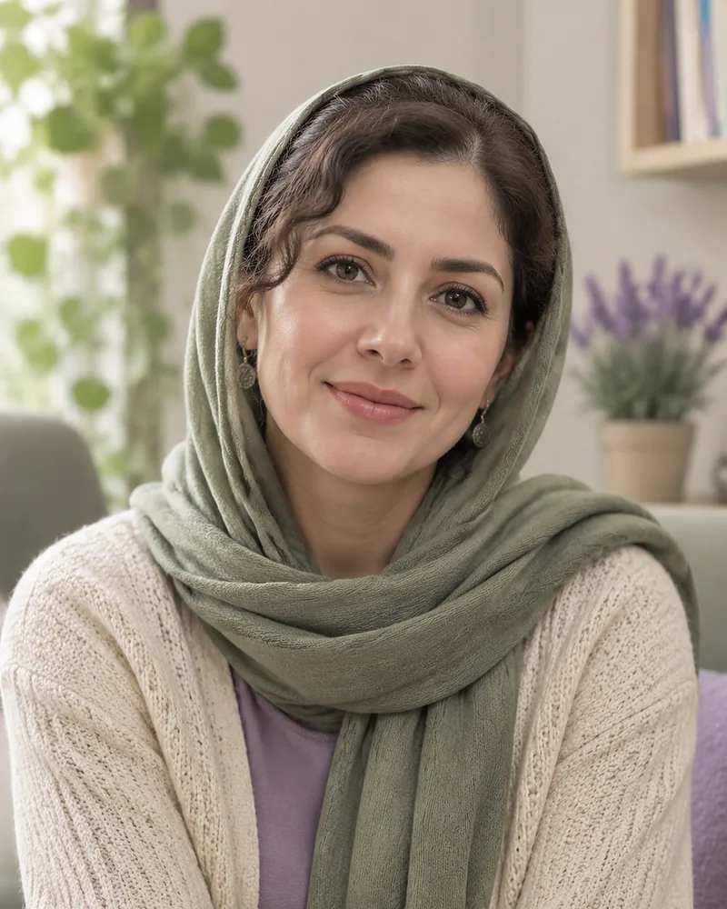
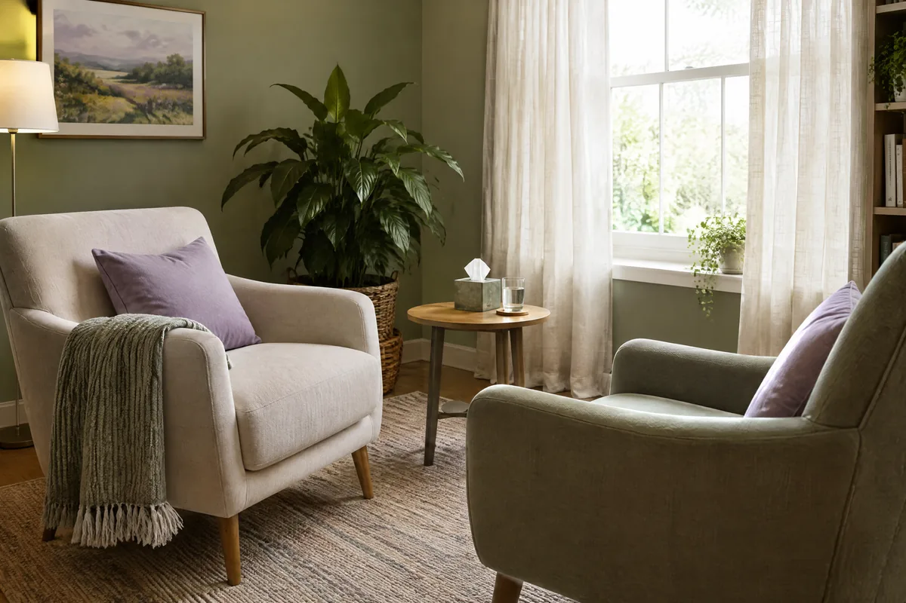

اضطراب و حملهی پانیک
شناختن عوامل اضطراب و یاد گرفتن راههای آرام شدن.

مشاوره و رواندرمانی برای اضطراب، افسردگی، مشکلات رابطه و سوگ؛ در فضایی امن و بدون قضاوت، حضوری یا آنلاین.

دکتر رها شریفی روانشناس بالینی است و با روشهای شناختیرفتاری (CBT) و درمان مبتنی بر پذیرش و تعهد (ACT) کار میکند. هدف جلسهها این است که راهکارهای عملی یاد بگیرید که در زندگی روزمره به کارتان بیاید.
شناختن عوامل اضطراب و یاد گرفتن راههای آرام شدن.
برگشتن تدریجی به زندگی عادی و کارهای روزمره.
بهتر حرف زدن با هم و حل کردن دعواهای تکراری.
کمک در روزهای سخت بعد از فوت یک عزیز یا جدایی.
یاد گرفتن «نه» گفتن و پیدا کردن دوبارهی انرژی.
شناختن فکرهای منفی دربارهی خودتان و نگاه مهربانتر به خود.
تماس تصویری امن، از هر جایی که راحت هستید.
در مطب، با فضایی آرام و خصوصی.
حضوری یا آنلاین، با حضور هر دو نفر.
خیلیها قبل از جلسهی اول نگران هستند. جلسه اینطور پیش میرود:
یک فرم کوتاه پر میکنید؛ فقط هر چه دوست دارید بنویسید.
با هم آشنا میشویم و دربارهی مشکلتان و چیزی که دوست دارید تغییر کند صحبت میکنیم.
به شما میگویم حدوداً چند جلسه لازم است و هر چند وقت یک بار؛ تصمیم با خودتان است.
همهی صحبتها محرمانه میماند.
زمان دلخواه را انتخاب کنید. برای جلسهی آنلاین، لینک جلسه پیامک میشود.
روز
ساعت
ابتدا یک روز را انتخاب کنید.
اگر مدتی است حالتان یا رابطههایتان روی کار و زندگی روزمره اثر گذاشته، یک جلسه کمک میکند بفهمید چه چیزی لازم دارید.
برای بیشتر موضوعها بله. مهم این است که جای آرام و خصوصی داشته باشید.
بسته به مشکل فرق میکند؛ بعد از جلسهی اول بهتر میتوانم بگویم.
تا ۲۴ ساعت قبل، با لینکی که برایتان پیامک شده میتوانید جلسه را لغو کنید یا زمانش را تغییر دهید.